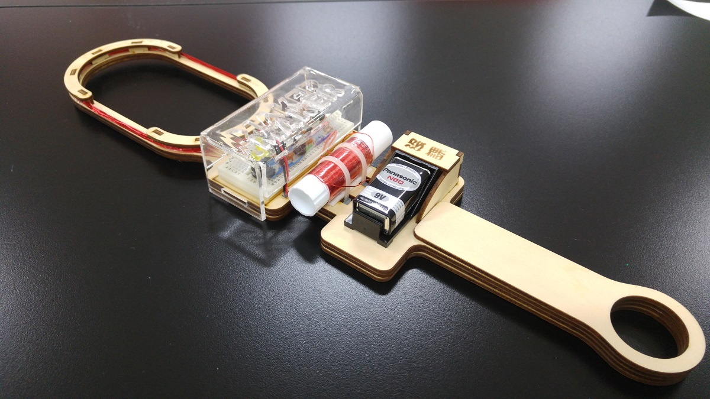
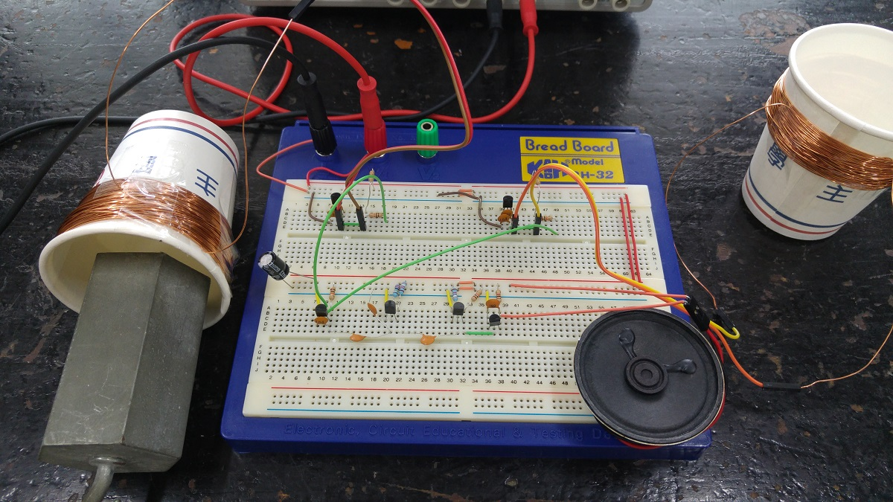
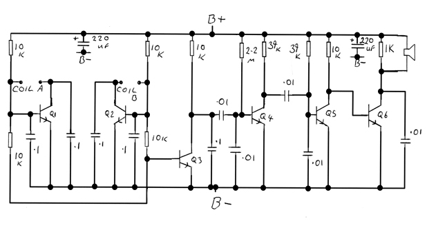

↓BFO金屬探測器，豪華雷切版製作過程(4支影片)。
↑BFO 金屬探測器，豪華雷切版。
1.主結構組裝與壓克力上蓋
↑BFO 金屬探測器，豪華雷切版。
2.纏繞探測、參考線圈與測試
↑BFO 金屬探測器，豪華雷切版。
3.主電路電子元件安裝
↑BFO 金屬探測器，豪華雷切版。
4.組合與實際使用

↑BFO metal detector，beat frequency oscillator 金屬探測器(豪華雷切版)。
2018/01/23
↑BFO metal detector，beat frequency oscillator 金屬探測器(手持版)。

↑BFO metal detector，beat frequency oscillator 金屬探測器(實驗版)。

↑電路圖(from http://www.easytreasure.co.uk/bfo.htm)。
參考資料：
BFO Metal Detector on breadboard step by step guide
2017/01/17